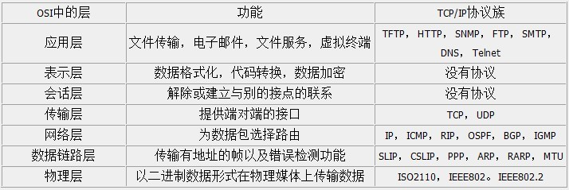

TCP是什么？
具体的关于TCP是什么，我不打算详细的说了；当你看到这篇文章时，我想你也知道TCP的概念了，想要更深入的了解TCP的工作，我们就继续。它只是一个超级麻烦的协议，而它又是互联网的基础，也是每个程序员必备的基本功。首先来看看OSI的七层模型：
我们需要知道TCP工作在网络OSI的七层模型中的第四层——Transport层，IP在第三层——Network层，ARP在第二层——Data Link层；在第二层上的数据，我们把它叫Frame，在第三层上的数据叫Packet，第四层的数据叫Segment。 同时，我们需要简单的知道，数据从应用层发下来，会在每一层都会加上头部信息，进行封装，然后再发送到数据接收端。这个基本的流程你需要知道，就是每个数据都会经过数据的封装和解封装的过程。 在OSI七层模型中，每一层的作用和对应的协议如下：

TCP是一个协议，那这个协议是如何定义的，它的数据格式是什么样子的呢？要进行更深层次的剖析，就需要了解，甚至是熟记TCP协议中每个字段的含义。哦，来吧。
上面就是TCP协议头部的格式，由于它太重要了，是理解其它内容的基础，下面就将每个字段的信息都详细的说明一下。
- Source Port和Destination Port:分别占用16位，表示源端口号和目的端口号；用于区别主机中的不同进程，而IP地址是用来区分不同的主机的，源端口号和目的端口号配合上IP首部中的源IP地址和目的IP地址就能唯一的确定一个TCP连接；
- Sequence Number:用来标识从TCP发端向TCP收端发送的数据字节流，它表示在这个报文段中的的第一个数据字节在数据流中的序号；主要用来解决网络报乱序的问题；
- Acknowledgment Number:32位确认序列号包含发送确认的一端所期望收到的下一个序号，因此，确认序号应当是上次已成功收到数据字节序号加1。不过，只有当标志位中的ACK标志（下面介绍）为1时该确认序列号的字段才有效。主要用来解决不丢包的问题；
- Offset:给出首部中32 bit字的数目，需要这个值是因为任选字段的长度是可变的。这个字段占4bit（最多能表示15个32bit的的字，即4*15=60个字节的首部长度），因此TCP最多有60字节的首部。然而，没有任选字段，正常的长度是20字节；
- TCP Flags:TCP首部中有6个标志比特，它们中的多个可同时被设置为1，主要是用于操控TCP的状态机的，依次为URG，ACK，PSH，RST，SYN，FIN。每个标志位的意思如下：
- URG：此标志表示TCP包的紧急指针域（后面马上就要说到）有效，用来保证TCP连接不被中断，并且督促中间层设备要尽快处理这些数据；
- ACK：此标志表示应答域有效，就是说前面所说的TCP应答号将会包含在TCP数据包中；有两个取值：0和1，为1的时候表示应答域有效，反之为0；
- PSH：这个标志位表示Push操作。所谓Push操作就是指在数据包到达接收端以后，立即传送给应用程序，而不是在缓冲区中排队；
- RST：这个标志表示连接复位请求。用来复位那些产生错误的连接，也被用来拒绝错误和非法的数据包；
- SYN：表示同步序号，用来建立连接。SYN标志位和ACK标志位搭配使用，当连接请求的时候，SYN=1，ACK=0；连接被响应的时候，SYN=1，ACK=1；这个标志的数据包经常被用来进行端口扫描。扫描者发送一个只有SYN的数据包，如果对方主机响应了一个数据包回来 ，就表明这台主机存在这个端口；但是由于这种扫描方式只是进行TCP三次握手的第一次握手，因此这种扫描的成功表示被扫描的机器不很安全，一台安全的主机将会强制要求一个连接严格的进行TCP的三次握手；
- FIN： 表示发送端已经达到数据末尾，也就是说双方的数据传送完成，没有数据可以传送了，发送FIN标志位的TCP数据包后，连接将被断开。这个标志的数据包也经常被用于进行端口扫描。
- Window:窗口大小，也就是有名的滑动窗口，用来进行流量控制；这是一个复杂的问题，这篇博文中并不会进行总结的；
好了，基本知识都已经准备好了，开始下一段的征程吧。
三次握手又是什么？
TCP是面向连接的，无论哪一方向另一方发送数据之前，都必须先在双方之间建立一条连接。在TCP/IP协议中，TCP协议提供可靠的连接服务，连接是通过三次握手进行初始化的。三次握手的目的是同步连接双方的序列号和确认号并交换 TCP窗口大小信息。这就是面试中经常会被问到的TCP三次握手。只是了解TCP三次握手的概念，对你获得一份工作是没有任何帮助的，你需要去了解TCP三次握手中的一些细节。先来看图说话。
多么清晰的一张图，当然了，也不是我画的，我也只是引用过来说明问题了。
- 第一次握手：建立连接。客户端发送连接请求报文段，将SYN位置为1，Sequence Number为x；然后，客户端进入SYN_SEND状态，等待服务器的确认；
- 第二次握手：服务器收到SYN报文段。服务器收到客户端的SYN报文段，需要对这个SYN报文段进行确认，设置Acknowledgment Number为x+1(Sequence Number+1)；同时，自己自己还要发送SYN请求信息，将SYN位置为1，Sequence Number为y；服务器端将上述所有信息放到一个报文段（即SYN+ACK报文段）中，一并发送给客户端，此时服务器进入SYN_RECV状态；
- 第三次握手：客户端收到服务器的SYN+ACK报文段。然后将Acknowledgment Number设置为y+1，向服务器发送ACK报文段，这个报文段发送完毕以后，客户端和服务器端都进入ESTABLISHED状态，完成TCP三次握手。
完成了三次握手，客户端和服务器端就可以开始传送数据。以上就是TCP三次握手的总体介绍。
那四次分手呢？
当客户端和服务器通过三次握手建立了TCP连接以后，当数据传送完毕，肯定是要断开TCP连接的啊。那对于TCP的断开连接，这里就有了神秘的“四次分手”。
- 第一次分手：主机1（可以使客户端，也可以是服务器端），设置Sequence Number和Acknowledgment Number，向主机2发送一个FIN报文段；此时，主机1进入FIN_WAIT_1状态；这表示主机1没有数据要发送给主机2了；
- 第二次分手：主机2收到了主机1发送的FIN报文段，向主机1回一个ACK报文段，Acknowledgment Number为Sequence Number加1；主机1进入FIN_WAIT_2状态；主机2告诉主机1，我“同意”你的关闭请求；
- 第三次分手：主机2向主机1发送FIN报文段，请求关闭连接，同时主机2进入LAST_ACK状态；
- 第四次分手：主机1收到主机2发送的FIN报文段，向主机2发送ACK报文段，然后主机1进入TIME_WAIT状态；主机2收到主机1的ACK报文段以后，就关闭连接；此时，主机1等待2MSL后依然没有收到回复，则证明Server端已正常关闭，那好，主机1也可以关闭连接了。
至此，TCP的四次分手就这么愉快的完成了。当你看到这里，你的脑子里会有很多的疑问，很多的不懂，感觉很凌乱；没事，我们继续总结。
为什么要三次握手
白话例子1
但是为什么一定要进行三次握手来保证连接是双工的呢，一次不行么？两次不行么？我们举一个现实生活中两个人进行语言沟通的例子来模拟三次握手。
引用网上的一些通俗易懂的例子，虽然不太正确，后面会指出，但是不妨碍我们理解，大体就是这么个理解法。
第一次对话：
老婆让甲出去打酱油，半路碰到一个朋友乙，甲问了一句：哥们你吃饭了么？
结果乙带着耳机听歌呢，根本没听到，没反应。甲心里想：跟你说话也没个音，不跟你说了，沟通失败。说明乙接受不到甲传过来的信息的情况下沟通肯定是失败的。
如果乙听到了甲说的话，那么第一次对话成功，接下来进行第二次对话。
第二次对话：
乙听到了甲说的话，但是他是老外，中文不好，不知道甲说的啥意思也不知道怎样回答，于是随便回答了一句学过的中文 ：我去厕所了。甲一听立刻笑喷了，“去厕所吃饭”?道不同不相为谋，离你远点吧，沟通失败。说明乙无法做出正确应答的情况下沟通失败。
如果乙听到了甲的话，做出了正确的应答，并且还进行了反问：我吃饭了，你呢？那么第二次握手成功。
通过前两次对话证明了乙能够听懂甲说的话，并且能做出正确的应答。 接下来进行第三次对话。
第三次对话：
甲刚和乙打了个招呼，突然老婆喊他，“你个死鬼，打个酱油咋这么半天，看我回家咋收拾你”，甲是个妻管严，听完吓得二话不说就跑回家了，把乙自己晾那了。乙心想：这什么人啊，得，我也回家吧，沟通失败。说明甲无法做出应答的情况下沟通失败。
如果甲也做出了正确的应答：我也吃了。那么第三次对话成功，两人已经建立起了顺畅的沟通渠道，接下来开始持续的聊天。
通过第二次和第三次的对话证明了甲能够听懂乙说的话，并且能做出正确的应答。
可见，两个人进行有效的语言沟通，这三次对话的过程是必须的。
为了保证服务端能收接受到客户端的信息并能做出正确的应答而进行前两次(第一次和第二次)握手，为了保证客户端能够接收到服务端的信息并能做出正确的应答而进行后两次(第二次和第三次)握手。
例子2
在谢希仁的《计算机网络》中是这样说的：
为了防止已失效的连接请求报文段突然又传送到了服务端，因而产生错误。
在书中同时举了一个例子，如下：
“已失效的连接请求报文段”的产生在这样一种情况下：client发出的第一个连接请求报文段并没有丢失，而是在某个网络结点长时间的滞留了，以致延误到连接释放以后的某个时间才到达server。本来这是一个早已失效的报文段。但server收到此失效的连接请求报文段后，就误认为是client再次发出的一个新的连接请求。于是就向client发出确认报文段，同意建立连接。假设不采用“三次握手”，那么只要server发出确认，新的连接就建立了。由于现在client并没有发出建立连接的请求，因此不会理睬server的确认，也不会向server发送数据。但server却以为新的运输连接已经建立，并一直等待client发来数据。这样，server的很多资源就白白浪费掉了。采用“三次握手”的办法可以防止上述现象发生。例如刚才那种情况，client不会向server的确认发出确认。server由于收不到确认，就知道client并没有要求建立连接。”
这就很明白了，防止了服务器端的一直等待而浪费资源。
总结
在Google Groups的TopLanguage中看到一帖讨论TCP“三次握手”觉得很有意思。贴主提出“TCP建立连接为什么是三次握手？”的问题，在众多回复中，有一条回复写道：“这个问题的本质是, 信道不可靠, 但是通信双发需要就某个问题达成一致. 而要解决这个问题, 无论你在消息中包含什么信息, 三次通信是理论上的最小值. 所以三次握手不是TCP本身的要求, 而是为了满足”在不可靠信道上可靠地传输信息”这一需求所导致的. 请注意这里的本质需求,信道不可靠, 数据传输要可靠. 三次达到了, 那后面你想接着握手也好, 发数据也好, 跟进行可靠信息传输的需求就没关系了. 因此,如果信道是可靠的, 即无论什么时候发出消息, 对方一定能收到, 或者你不关心是否要保证对方收到你的消息, 那就能像UDP那样直接发送消息就可以了.”。这可视为对“三次握手”目的的另一种解答思路。
为什么要四次分手
那四次分手又是为何呢？TCP协议是一种面向连接的、可靠的、基于字节流的运输层通信协议。TCP是全双工模式，这就意味着，当主机1发出FIN报文段时，只是表示主机1已经没有数据要发送了，主机1告诉主机2，它的数据已经全部发送完毕了；但是，这个时候主机1还是可以接受来自主机2的数据；当主机2返回ACK报文段时，表示它已经知道主机1没有数据发送了，但是主机2还是可以发送数据到主机1的；当主机2也发送了FIN报文段时，这个时候就表示主机2也没有数据要发送了，就会告诉主机1，我也没有数据要发送了，之后彼此就会愉快的中断这次TCP连接。如果要正确的理解四次分手的原理，就需要了解四次分手过程中的状态变化。
- FIN_WAIT_1: 这个状态要好好解释一下，其实FIN_WAIT_1和FIN_WAIT_2状态的真正含义都是表示等待对方的FIN报文。而这两种状态的区别是：FIN_WAIT_1状态实际上是当SOCKET在ESTABLISHED状态时，它想主动关闭连接，向对方发送了FIN报文，此时该SOCKET即进入到FIN_WAIT_1状态。而当对方回应ACK报文后，则进入到FIN_WAIT_2状态，当然在实际的正常情况下，无论对方何种情况下，都应该马上回应ACK报文，所以FIN_WAIT_1状态一般是比较难见到的，而FIN_WAIT_2状态还有时常常可以用netstat看到。（主动方）
- FIN_WAIT_2：上面已经详细解释了这种状态，实际上FIN_WAIT_2状态下的SOCKET，表示半连接，也即有一方要求close连接，但另外还告诉对方，我暂时还有点数据需要传送给你(ACK信息)，稍后再关闭连接。（主动方）
- CLOSE_WAIT：这种状态的含义其实是表示在等待关闭。怎么理解呢？当对方close一个SOCKET后发送FIN报文给自己，你系统毫无疑问地会回应一个ACK报文给对方，此时则进入到CLOSE_WAIT状态。接下来呢，实际上你真正需要考虑的事情是察看你是否还有数据发送给对方，如果没有的话，那么你也就可以 close这个SOCKET，发送FIN报文给对方，也即关闭连接。所以你在CLOSE_WAIT状态下，需要完成的事情是等待你去关闭连接。（被动方）
- LAST_ACK: 这个状态还是比较容易好理解的，它是被动关闭一方在发送FIN报文后，最后等待对方的ACK报文。当收到ACK报文后，也即可以进入到CLOSED可用状态了。（被动方）
- TIME_WAIT: 表示收到了对方的FIN报文，并发送出了ACK报文，就等2MSL后即可回到CLOSED可用状态了。如果FINWAIT1状态下，收到了对方同时带FIN标志和ACK标志的报文时，可以直接进入到TIME_WAIT状态，而无须经过FIN_WAIT_2状态。（主动方）
- CLOSED: 表示连接中断。
TIME_WAIT状态的含义
简单来说，TIME_WAIT有两个作用，如下：
- 1） 确认主动关闭的一方最后发出的ack能够到达被动关闭的一方。
TCP协议在关闭连接的四次握手过程中，最终的ACK是由主动关闭连接的一端（后面统称A端）发出的，如果这个ACK丢失，对方（后面统称B端）将重发出最终的FIN，因此A端必须维护状态信息（TIME_WAIT）允许它重发最终的ACK。如果A端不维持TIME_WAIT状态，而是处于CLOSED 状态，那么A端将响应RST分节，B端收到后将此分节解释成一个错误（在java中会抛出connection reset的SocketException)。
因而，要实现TCP全双工连接的正常终止，必须处理终止过程中四个分节任何一个分节的丢失情况，主动关闭连接的A端必须维持TIME_WAIT状态 。
- 2）允许老的重复分节在网络中消逝
TCP分节可能由于路由器异常而“迷途”，在迷途期间，TCP发送端可能因确认超时而重发这个分节，迷途的分节在路由器修复后也会被送到最终目的地，这个迟到的迷途分节到达时可能会引起问题。在关闭“前一个连接”之后，马上又重新建立起一个相同的IP和端口之间的“新连接”，“前一个连接”的迷途重复分组在“前一个连接”终止后到达，而被“新连接”收到了。为了避免这个情况，TCP协议不允许处于TIME_WAIT状态的连接启动一个新的可用连接，因为TIME_WAIT状态持续2MSL，就可以保证当成功建立一个新TCP连接的时候，来自旧连接重复分组已经在网络中消逝。
参考资料
http://www.jellythink.com/archives/705
http://www.cnblogs.com/techzi/archive/2011/10/18/2216751.html
https://github.com/jawil/blog/issues/14